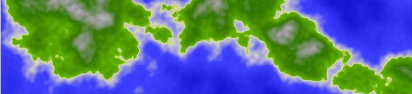
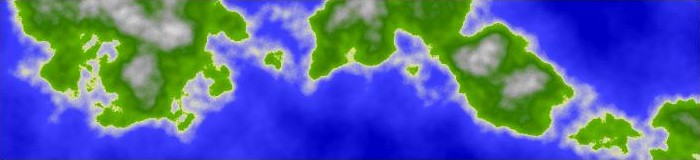
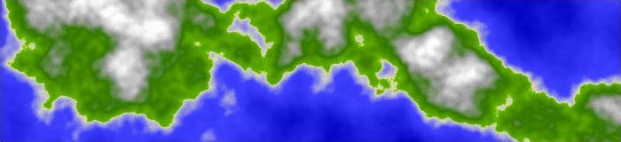

As with the classic Clouds image ("sum 1/f noise") we compute a weighted sum for a set of scaled noise calls. However, instead of using the resulting value to calculate individual color channel values, we use it to index into a ColorMap to get stored color channel data.
The following code will create a BufferedImage that
matches the above graphic. A template has been provided (see the
"Code Template" button) where you can copy and paste this code
and run it as a stand-alone Java program. You will also need to
load the ColorMap class, which can be obtained via the "ColorMap
Source" button.
int[][] pegs = { // location, R, B, G, alpha
{0, 255, 255, 255, 255},
{40, 153, 153, 153, 255},
{64, 0, 128, 0, 255},
{95, 96, 176, 0, 255},
{99, 224, 224, 128, 255},
{100, 204, 204, 204, 255},
{128, 64, 64, 255, 255},
{255, 0, 0, 192, 255}};
int[][] colorMap = ColorMap.makeMap(pegs);
BufferedImage image = new BufferedImage(700, 160,
BufferedImage.TYPE_INT_ARGB);
WritableRaster raster = image.getRaster();
int[] pixel = new int[4]; //[0]=r, [1]=g, [2]=b, [3]=alpha
pixel[3] = 255; // alpha = opaque
int[] octaveScale = {1, 4, 16, 64};
int[] octaveAmplitude = {64, 16, 4, 1};
int octaves = octaveScale.length;
float amplitudeSum = 0;
for (int i : octaveAmplitude) amplitudeSum += i;
double noiseSum = 0;
for (int y = 0; y < 160; y++)
{
for (int x = 0; x < 700; x++)
{
noiseSum = 0;
for (int i = 0; i < octaves; i++)
{
noiseSum += SimplexNoise.noise(
x * octaveScale[i]/256f,
y * octaveScale[i]/256f )
* ( octaveAmplitude[i]/amplitudeSum );
}
noiseSum = (noiseSum * 0.5) + .5;
noiseSum *= 256;
noiseSum = Math.max(noiseSum, 0);
noiseSum = Math.min(noiseSum, 255);
int idx = (int)noiseSum;
pixel[0] = colorMap[idx][0];
pixel[1] = colorMap[idx][1];
pixel[2] = colorMap[idx][2];
raster.setPixel(x, y, pixel);
}
}
In this example, we use the calculated noise value to index into a color map. The calculation of the noise value itself is pretty much identical to the method used in the previous section Classic Clouds - Sum 1/f noise. The scaling is a bit different, and I've also added a couple lines (min and max clamping) to the processing of the output to help out with examples at the end of this section where we directly edit this code.
Before we can index into a Color Map, we have to have one! It is possible to take any graphic source and use it as a map. Just load the graphic into a BufferedImage, and scale your noise value to index in and inspect the color data.
For the purposes of the tutorial, I have created a ColorMap class which allows us to procedurally create a structure that we can index into. I made the length of the ColorMap equal 256, so we can use the same scaling we used for our color values previously.
The gradients on the color map are created by interpolating the color values we place in the map as "pegs". If there were only two pegs, one of white and the other of blue, we would get the same result as we do for the Clouds colors. If the two pegs were the same shades of brown used in the Tree Rings example, the resulting intermediate colors would also be the same. In fact, the Texture Tool's default is to use a structure very similar to the ColorMap object I've provided.
The particular gradient I created is modeled on one shown in a tutorial by Shannon Smith (aka AngryOctapus at http://www.angryoctopus.co.nz/?p=11). He says his gradient was a preset in Gimp.
[Shannon goes on to turn the 2D planet surface gradient into a 3D planet graphic, so you might want to take a look at that. I'm not going to discuss 3D in this introductory tutorial.]
You can get a closer look at the gradient used in our example by bringing it up in the ColorBar editing tool on the bottom right of the Texture Tool. From there, you can try tinkering with the colors and their placements. Unfortunately, I limited the Color Map editing tool to 8 color pegs. Also limiting is that the only method used to bridge the pegs is linear interpolation. I did add the ability to optionally interpolate over HSB color space, and added a few short cut buttons for reversing direction and converting the colors to their RGB "negatives." But much more could be accomplished, I think, if some form of curve-fitting were made optionally possible. It would be good to be able to lessen the tendency of "cornering" (discontinuities of direction) which tends to catch the eye at the peg points.
Editing the sample code directly
In addition to playing around with the texture values on the Texture Editing tool, I hope you are spending some time directly tinkering with the sample code. For this example, I'd like to just that.
One thing you might have noticed is that in the scaling and volume arrays, I "skipped" octaves. This was, in part, because I wanted to have the terrain reflect a wider range of values than I could fit in four contiguous octaves. With the code sample, though, we can add in the missing octaves and compare the result.
So, try editing the code to add the three missing octaves. The
octaveScaling array should contain the following values:
{1, 2, 4, 8, 16, 32, 64} and the octaveAmplitudes
array should contain: {64, 32, 16, 8, 4, 2, 1}.
Running this, I get the following image, which you can compare to
the graphic at the top of this section.
Fig. 1, Terra surface with 7 octaves.

It's not so obvious to me we have improved the graphic much. There is a bit more intermediate-level variety to the geography, but also a bit more activity near the center of the color map, and a bit of a reduction to the peaks of the mountains and the depth of the blue oceans. You may prefer it, but I think I will go back to my original set of four channels.
Another idea for a change would be to edit or add more color
pegs. I was fiddling around and able to make one small improvement
by altering the peg at position 64 to these setting:
{64, 48, 120, 0, 255} and adding a peg at 72 with these
settings: {72, 64, 128, 0, 255}, giving this part of
the graphic a slightly browner tinge.
Fig. 2, Terra surface with a 9-peg color map (adding a bit of browness to the texture)
One last idea for directly editing, is to purposefully bang into the end colors by expanding the range of the resulting values and clamping. If we do this correctly we should be able to get a bit more white in the mountain peaks and deep blue for the ocean depths.
Notice, that instead of coding the smooth normalization
function as (1 - noiseSum)/2, I used the algebraically
equivalent function (noiseSum * 0.5) + 0.5. In this
way we can more clearly see that the range has been halved and then
translated. Since we want the result to be slightly over-sized,
suppose we use the factor 0.7 instead. Then, instead of translating
by 0.5, let's overshoot the 0 to 1 range by 0.1 on either side. This
can be done by editing the line to the following:
noiseSum = (noiseSum * 0.7) + 0.6;
After multiplying by 255, the result will overshoot on both end, so we have to clamp the values with the Min and Max functions. The resulting graphic follows:
Fig. 3, Terra surface with a bit of clamping at either end and less activity in the middle
To add more ocean, we can translate the function upward by adding a larger amount, e.g., 0.7 instead of 0.6.
Fig. 4A, Terra surface with clamping at the top end of the ColorMap: (more ocean)

To add more land mass, we can translate the function downward by adding less, e.g., 0.5 instead of 0.6. As you can see, the mountainous area also expands.
Fig. 4B, Terra surface with clamping at the bottom end of the ColorMap (more land mass)
